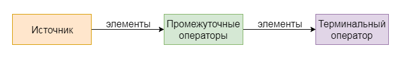

Полное руководство по Java 8 Stream API в картинках и примерах
9.08.2017 / 14:35 от aNNiMON
Java java, java 8, stream api, collector, flatmap, interactive
Содержание
С момента выхода Java 8 я практически сразу начал пользоваться Stream API, так как функциональный подход обработки данных мне пришелся по нраву. Хотелось пользоваться им везде, поэтому я начал разрабатывать библиотеку Lightweight-Stream-API, которая привносит подобный подход в ранние версии Java. Также меня интересовало внутреннее устройство стримов. За это время накопилось достаточно опыта и теперь я спешу им поделиться.
В статье, помимо описания стримов, приводятся визуальные демонстрации работы операторов, примеры и задачи для самопроверки. Также затронуты нововведения, касающиеся стримов в Java 9.
Дабы не путать стримы (Stream) с I/O потоками (InputStream/OutputStream) и тредами/нитями/потоками (Thread), я буду придерживаться англоязычного именования в транслите и называть Stream стримом.
Stream — это объект для универсальной работы с данными. Мы указываем, какие операции хотим провести, при этом не заботясь о деталях реализации. Например, взять элементы из списка сотрудников, выбрать тех, кто младше 40 лет, отсортировать по фамилии и поместить в новый список. Или чуть сложнее, прочитать все json-файлы, находящиеся в папке books, десериализировать в список объектов книг, обработать элементы всех этих списков, а затем сгруппировать книги по автору.
Данные могут быть получены из источников, коими являются коллекции или методы, поставляющие данные. Например, список файлов, массив строк, метод range() для числовых промежутков и т.д. То есть, стрим использует существующие коллекции для получения новых элементов, это ни в коем случае не новая структура данных.
К данным затем применяются операторы. Например, взять лишь некоторые элементы (filter), преобразовать каждый элемент (map), посчитать сумму элементов или объединить всё в один объект (reduce).

Операторы можно разделить на две группы:
- Промежуточные (intermediate) — обрабатывают поступающие элементы и возвращают стрим. Промежуточных операторов в цепочке обработки элементов может быть много.
- Терминальные (terminal) — обрабатывают элементы и завершают работу стрима, так что терминальный оператор в цепочке может быть только один.
Пока что хватит теории. Пришло время посмотреть, как создать или получить объект java.util.stream.Stream.
- Пустой стрим: Stream.empty() // Stream<String>
- Стрим из List: list.stream() // Stream<String>
- Стрим из Map: map.entrySet().stream() // Stream<Map.Entry<String, String>>
- Стрим из массива: Arrays.stream(array) // Stream<String>
- Стрим из указанных элементов: Stream.of("a", "b", "c") // Stream<String>
А вот и пример:
В данном примере источником служит метод Arrays.stream, который из массива args делает стрим. Промежуточный оператор filter отбирает только те строки, длина которых не превышает два. Терминальный оператор collect собирает полученные элементы в новый список.
И ещё один пример:
Здесь уже три промежуточных оператора:
- filter — отбирает элементы, значение которых меньше 300,
- map — прибавляет 11 к каждому числу,
- limit — ограничивает количество элементов до 3.
Терминальный оператор forEach применяет функцию print к каждому приходящему элементу.
Ваш браузер не поддерживает это видео.
На ранних версиях Java этот пример выглядел бы так:
С увеличением числа операторов код в ранних версиях усложнялся бы на порядок, не говоря уже о том, что разбить вычисления на несколько потоков при таком подходе было бы крайне непросто.
У стримов есть некоторые особенности. Во-первых, обработка не начнётся до тех пор, пока не будет вызван терминальный оператор. list.stream().filter(x -> x > 100); не возьмёт ни единого элемента из списка. Во-вторых, стрим после обработки нельзя переиспользовать.
Код на второй строке выполнится, а вот на третьей выбросит исключение java.lang.IllegalStateException: stream has already been operated upon or closed.
Исходя из первой особенности, делаем вывод, что обработка происходит от терминального оператора к источнику. Это действительно так и это удобно. Мы можем в качестве источника использовать генерируемую бесконечную последовательность, скажем, факториала или чисел Фибоначчи, но обрабатывать лишь некоторую её часть.
Ваш браузер не поддерживает это видео.
Пока мы не присоединили терминальный оператор, доступа к источнику не проводилось. Как только появился терминальный оператор forEach, он стал запрашивать элементы у стоящего перед ним оператора limit. Тот в свою очередь обращается к map, map к filter, а filter уже обращается к источнику. Затем элементы поступают в прямом порядке: источник, filter, map, limit и forEach.
Пока какой-либо из операторов не обработает элемент должным образом, новые запрошены не будут.
Как только через оператор limit прошло 3 элемента, он переходит в закрытое состояние и больше не будет запрашивать элементы у map. forEach запрашивает очередной элемент, но limit сообщает, что больше не может поставить элементов, поэтому forEach делает вывод, что элементы закончились и прекращает работу.
Такой подход зовётся pull iteration, то есть элементы запрашиваются у источника по мере надобности. К слову, в RxJava реализован push iteration подход, то есть источник сам уведомляет, что появились элементы и их нужно обработать.
Стримы бывают последовательными (sequential) и параллельными (parallel). Последовательные выполняются только в текущем потоке, а вот параллельные используют общий пул ForkJoinPool.commonPool(). При этом элементы разбиваются (если это возможно) на несколько групп и обрабатываются в каждом потоке отдельно. Затем на нужном этапе группы объединяются в одну для предоставления конечного результата.
Чтобы получить параллельный стрим, нужно либо вызвать метод parallelStream() вместо stream(), либо превратить обычный стрим в параллельный, вызвав промежуточный оператор parallel.
Работа с потоконебезопасными коллекциями, разбиение элементов на части, создание потоков, объединение частей воедино, всё это кроется в реализации Stream API. От нас лишь требуется вызвать нужный метод и проследить, чтобы функции в операторах не зависели от каких-либо внешних факторов, иначе есть риск получить неверный результат или ошибку.
Вот так делать нельзя:
Это код Шрёдингера. Он может нормально выполниться и показать 1000000, может выполниться и показать 869877, а может и упасть с ошибкой Exception in thread "main" java.lang.ArrayIndexOutOfBoundsException: 332 at java.util.ArrayList.add(ArrayList.java:459).
Поэтому разработчики настоятельно просят воздержаться от побочных эффектов в лямбдах, то тут, то там говоря в документации о невмешательстве (non-interference).
Кроме объектных стримов Stream<T>, существуют специальные стримы для примитивных типов:
- IntStream для int,
- LongStream для long,
- DoubleStream для double.
Для boolean, byte, short и char специальных стримов не придумали, но вместо них можно использовать IntStream, а затем приводить к нужному типу. Для float тоже придётся воспользоваться DoubleStream.
Примитивные стримы полезны, так как не нужно тратить время на боксинг/анбоксинг, к тому же у них есть ряд специальных операторов, упрощающих жизнь. Их мы рассмотрим очень скоро.
Дальше приводятся операторы Stream API с описанием, демонстрацией и примерами. Можете использовать это как справочник.
Стрим, как и коллекция, может быть пустым, а значит всем последующем операторам нечего будет обрабатывать.
Стрим для одного или нескольких перечисленных элементов. Очень часто вижу, что используют такую конструкцию:
однако она излишня. Вот так проще:
Появился в Java 9. Возвращает пустой стрим, если в качестве аргумента передан null, в противном случае, возвращает стрим из одного элемента.
Возвращает стрим с бесконечной последовательностью элементов, генерируемых функцией Supplier s.
Ваш браузер не поддерживает это видео.
Поскольку стрим бесконечный, нужно его ограничивать или осторожно использовать, дабы не попасть в бесконечный цикл.
iterate(T seed, UnaryOperator f)
Возвращает бесконечный стрим с элементами, которые образуются в результате последовательного применения функции f к итерируемому значению. Первым элементом будет seed, затем f(seed), затем f(f(seed)) и так далее.
Ваш браузер не поддерживает это видео.
iterate(T seed, Predicate hasNext, UnaryOperator f)
Появился в Java 9. Всё то же самое, только добавляется ещё один аргумент hasNext: если он возвращает false, то стрим завершается. Это очень похоже на цикл for:
Таким образом, с помощью iterate теперь можно создать конечный стрим.
Ваш браузер не поддерживает это видео.
Объединяет два стрима так, что вначале идут элементы стрима A, а по его окончанию последуют элементы стрима B.
Ваш браузер не поддерживает это видео.
Создаёт мутабельный объект для добавления элементов в стрим без использования какого-либо контейнера для этого.
IntStream.range(int startInclusive, int endExclusive)
LongStream.range(long startInclusive, long endExclusive)
Создаёт стрим из числового промежутка [start..end), то есть от start (включительно) по end.
IntStream.rangeClosed(int startInclusive, int endInclusive)
LongStream.rangeClosed(long startInclusive, long endInclusive)
Создаёт стрим из числового промежутка [start..end], то есть от start (включительно) по end (включительно).
Фильтрует стрим, принимая только те элементы, которые удовлетворяют заданному условию.
Ваш браузер не поддерживает это видео.
Применяет функцию к каждому элементу и затем возвращает стрим, в котором элементами будут результаты функции. map можно применять для изменения типа элементов.
Stream.mapToDouble(ToDoubleFunction mapper)
Stream.mapToInt(ToIntFunction mapper)
Stream.mapToLong(ToLongFunction mapper)
IntStream.mapToObj(IntFunction mapper)
IntStream.mapToLong(IntToLongFunction mapper)
IntStream.mapToDouble(IntToDoubleFunction mapper)
Специальные операторы для преобразования объектного стрима в примитивный, примитивного в объектный, либо примитивного стрима одного типа в примитивный стрим другого.
Ваш браузер не поддерживает это видео.
flatMap(Function<T, Stream<R>> mapper)
Один из самых интересных операторов. Работает как map, но с одним отличием — можно преобразовать один элемент в ноль, один или множество других.
flatMapToDouble(Function mapper)
flatMapToInt(Function mapper)
flatMapToLong(Function mapper)
Как и в случае с map, служат для преобразования в примитивный стрим.
Для того, чтобы один элемент преобразовать в ноль элементов, нужно вернуть null, либо пустой стрим. Чтобы преобразовать в один элемент, нужно вернуть стрим из одного элемента, например, через Stream.of(x). Для возвращения нескольких элементов, можно любыми способами создать стрим с этими элементами.
Ваш браузер не поддерживает это видео.
Ограничивает стрим maxSize элементами.
Ваш браузер не поддерживает это видео.
Пропускает n элементов стрима.
Ваш браузер не поддерживает это видео.
sorted()
sorted(Comparator comparator)
Сортирует элементы стрима. Причём работает этот оператор очень хитро: если стрим уже помечен как отсортированный, то сортировка проводиться не будет, иначе соберёт все элементы, отсортирует их и вернёт новый стрим, помеченный как отсортированный. См. 9.1.
Ваш браузер не поддерживает это видео.
Убирает повторяющиеся элементы и возвращаем стрим с уникальными элементами. Как и в случае с sorted, смотрит, состоит ли уже стрим из уникальных элементов и если это не так, отбирает уникальные и помечает стрим как содержащий уникальные элементы.
Ваш браузер не поддерживает это видео.
Выполняет действие над каждым элементом стрима и при этом возвращает стрим с элементами исходного стрима. Служит для того, чтобы передать элемент куда-нибудь, не разрывая при этом цепочку операторов (вы же помните, что forEach — терминальный оператор и после него стрим завершается?), либо для отладки.
Ваш браузер не поддерживает это видео.
takeWhile(Predicate predicate)
Появился в Java 9. Возвращает элементы до тех пор, пока они удовлетворяют условию, то есть функция-предикат возвращает true. Это как limit, только не с числом, а с условием.
Ваш браузер не поддерживает это видео.
dropWhile(Predicate predicate)
Появился в Java 9. Пропускает элементы до тех пор, пока они удовлетворяют условию, затем возвращает оставшуюся часть стрима. Если предикат вернул для первого элемента false, то ни единого элемента не будет пропущено. Оператор подобен skip, только работает по условию.
Ваш браузер не поддерживает это видео.
Преобразует примитивный стрим в объектный.
void forEach(Consumer action)
Выполняет указанное действие для каждого элемента стрима.
Ваш браузер не поддерживает это видео.
void forEachOrdered(Consumer action)
Тоже выполняет указанное действие для каждого элемента стрима, но перед этим добивается правильного порядка вхождения элементов. Используется для параллельных стримов, когда нужно получить правильную последовательность элементов.
Возвращает количество элементов стрима.
R collect(Collector collector)
Один из самых мощных операторов Stream API. С его помощью можно собрать все элементы в список, множество или другую коллекцию, сгруппировать элементы по какому-нибудь критерию, объединить всё в строку и т.д.. В классе java.util.stream.Collectors очень много методов на все случаи жизни, мы рассмотрим их позже. При желании можно написать свой коллектор, реализовав интерфейс Collector.
R collect(Supplier supplier, BiConsumer accumulator, BiConsumer combiner)
То же, что и collect(collector), только параметры разбиты для удобства. Если нужно быстро сделать какую-то операцию, нет нужды реализовывать интерфейс Collector, достаточно передать три лямбда-выражения.
supplier должен поставлять новые объекты (контейнеры), например new ArrayList(), accumulator добавляет элемент в контейнер, combiner необходим для параллельных стримов и объединяет части стрима воедино.
Возвращает нетипизированный массив с элементами стрима.
A[] toArray(IntFunction<A[]> generator)
Аналогично, только возвращает типизированный массив.
T reduce(T identity, BinaryOperator accumulator)
U reduce(U identity, BiFunction accumulator, BinaryOperator combiner)
Ещё один полезный оператор. Позволяет преобразовать все элементы стрима в один объект. Например, посчитать сумму всех элементов, либо найти минимальный элемент.
Сперва берётся объект identity и первый элемент стрима, применяется функция accumulator и identity становится её результатом. Затем всё продолжается для остальных элементов.
Ваш браузер не поддерживает это видео.
Optional reduce(BinaryOperator accumulator)
Этот метод отличается тем, что у него нет начального объекта identity. В качестве него служит первый элемент стрима. Поскольку стрим может быть пустой и тогда identity объект не присвоится, то результатом функции служит Optional, позволяющий обработать и эту ситуацию, вернув Optional.empty().
Ваш браузер не поддерживает это видео.
Optional min(Comparator comparator)
Optional max(Comparator comparator)
Поиск минимального/максимального элемента, основываясь на переданном компараторе. Внутри вызывается reduce:
Возвращает первый попавшийся элемент стрима. В параллельных стримах это может быть действительно любой элемент, который лежал в разбитой части последовательности.
Гарантированно возвращает первый элемент стрима, даже если стрим параллельный.
Если нужен любой элемент, то для параллельных стримов быстрее будет работать findAny().
boolean allMatch(Predicate predicate)
Возвращает true, если все элементы стрима удовлетворяют условию predicate. Если встречается какой-либо элемент, для которого результат вызова функции-предиката будет false, то оператор перестаёт просматривать элементы и возвращает false.
Ваш браузер не поддерживает это видео.
Ваш браузер не поддерживает это видео.
boolean anyMatch(Predicate predicate)
Возвращает true, если хотя бы один элемент стрима удовлетворяет условию predicate. Если такой элемент встретился, нет смысла продолжать перебор элементов, поэтому сразу возвращается результат.
Ваш браузер не поддерживает это видео.
Ваш браузер не поддерживает это видео.
boolean noneMatch(Predicate predicate)
Возвращает true, если, пройдя все элементы стрима, ни один не удовлетворил условию predicate. Если встречается какой-либо элемент, для которого результат вызова функции-предиката будет true, то оператор перестаёт перебирать элементы и возвращает false.
Ваш браузер не поддерживает это видео.
Ваш браузер не поддерживает это видео.
Только для примитивных стримов. Возвращает среднее арифметическое всех элементов. Либо Optional.empty, если стрим пуст.
Возвращает сумму элементов примитивного стрима. Для IntStream результат будет типа int, для LongStream — long, для DoubleStream — double.
IntSummaryStatistics summaryStatistics()
Полезный метод примитивных стримов. Позволяет собрать статистику о числовой последовательности стрима, а именно: количество элементов, их сумму, среднее арифметическое, минимальный и максимальный элемент.
Самый распространённый метод. Собирает элементы в List.
Собирает элементы в множество.
toCollection(Supplier collectionFactory)
Собирает элементы в заданную коллекцию. Если нужно конкретно указать, какой List, Set или другую коллекцию мы хотим использовать, то этот метод поможет.
toMap(Function keyMapper, Function valueMapper)
Собирает элементы в Map. Каждый элемент преобразовывается в ключ и в значение, основываясь на результате функций keyMapper и valueMapper соответственно. Если нужно вернуть тот же элемент, что и пришел, то можно передать Function.identity().
toMap(Function keyMapper, Function valueMapper, BinaryOperator mergeFunction)
Аналогичен первой версии метода, только в случае, когда встречается два одинаковых ключа, позволяет объединить значения.
В данном случае, для чисел 50, 55 и 20, ключ одинаков и равен 0, поэтому значения накапливаются. Для 64 и 19 аналогично.
toMap(Function keyMapper, Function valueMapper, BinaryOperator mergeFunction, Supplier mapFactory)
Всё то же, только позволяет указывать, какой именно класс Map использовать.
Отличие этого примера от предыдущего в том, что теперь сохраняется порядок, благодаря LinkedHashList.
toConcurrentMap(Function keyMapper, Function valueMapper)
toConcurrentMap(Function keyMapper, Function valueMapper, BinaryOperator mergeFunction)
toConcurrentMap(Function keyMapper, Function valueMapper, BinaryOperator mergeFunction, Supplier mapFactory)
Всё то же самое, что и toMap, только работаем с ConcurrentMap.
collectingAndThen(Collector downstream, Function finisher)
Собирает элементы с помощью указанного коллектора, а потом применяет к полученному результату функцию.
joining()
joining(CharSequence delimiter)
joining(CharSequence delimiter, CharSequence prefix, CharSequence suffix)
Собирает элементы, реализующие интерфейс CharSequence, в единую строку. Дополнительно можно указать разделитель, а также префикс и суффикс для всей последовательности.
summingInt(ToIntFunction mapper)
summingLong(ToLongFunction mapper)
summingDouble(ToDoubleFunction mapper)
Коллектор, который преобразовывает объекты в int/long/double и подсчитывает сумму.
averagingInt(ToIntFunction mapper)
averagingLong(ToLongFunction mapper)
averagingDouble(ToDoubleFunction mapper)
Аналогично, но со средним значением.
summarizingInt(ToIntFunction mapper)
summarizingLong(ToLongFunction mapper)
summarizingDouble(ToDoubleFunction mapper)
Аналогично, но с полной статистикой.
Все эти методы и несколько последующих, зачастую используются в качестве составных коллекторов для группировки или collectingAndThen. В том виде, в котором они показаны на примерах используются редко. Я лишь показываю пример, что они возвращают, чтобы было понятнее.
Подсчитывает количество элементов.
filtering(Predicate predicate, Collector downstream)
mapping(Function mapper, Collector downstream)
flatMapping(Function downstream)
reducing(BinaryOperator op)
reducing(T identity, BinaryOperator op)
reducing(U identity, Function mapper, BinaryOperator op)
Специальная группа коллекторов, которая применяет операции filter, map, flatMap и reduce. filtering и flatMapping появились в Java 9.
Поиск минимального/максимального элемента, основываясь на заданном компараторе.
groupingBy(Function classifier)
groupingBy(Function classifier, Collector downstream)
groupingBy(Function classifier, Supplier mapFactory, Collector downstream)
Группирует элементы по критерию, сохраняя результат в Map. Вместе с представленными выше агрегирующими коллекторами, позволяет гибко собирать данные. Подробнее о комбинировании в разделе Примеры.
groupingByConcurrent(Function classifier)
groupingByConcurrent(Function classifier, Collector downstream)
groupingByConcurrent(Function classifier, Supplier mapFactory, Collector downstream)
Аналогичный набор методов, только сохраняет в ConcurrentMap.
partitioningBy(Predicate predicate)
partitioningBy(Predicate predicate, Collector downstream)
Ещё один интересный метод. Разбивает последовательность элементов по какому-либо критерию. В одну часть попадают все элементы, которые удовлетворяют переданному условию, во вторую — все, которые не удовлетворяют.
Интерфейс java.util.stream.Collector служит для сбора элементов стрима в некоторый мутабельный контейнер. Он состоит из таких методов:
- Supplier<A> supplier() — функция, которая создаёт экземпляры контейнеров.
- BiConsumer<A,T> accumulator() — функция, которая кладёт новый элемент в контейнер.
- BinaryOperator<A> combiner() — функция, которая объединяет два контейнера в один. В параллельных стримах каждая часть может собираться в отдельный экземпляр контейнера и в итоге необходимо их объединять в один результирующий.
- Function<A,R> finisher() — функция, которая преобразовывает весь контейнер в конечный результат. Например, можно обернуть List в Collections.unmodifiableList.
- Set<Characteristics> characteristics() — возвращает характеристики коллектора, чтобы внутренняя реализация знала, с чем имеет дело. Например, можно указать, что коллектор поддерживает многопоточность.
Характеристики:
- CONCURRENT — коллектор поддерживает многопоточность, а значит отдельные части стрима могут быть успешно положены в контейнер из другого потока.
- UNORDERED — коллектор не зависит от порядка поступаемых элементов.
- IDENTITY_FINISH — функция finish() имеет стандартную реализацию (Function.identity()), а значит её можно не вызывать.
8.1. Реализация собственного коллектора
Прежде чем писать свой коллектор, нужно убедиться, что задачу нельзя решить при помощи комбинации стандартных коллекторов.
К примеру, если нужно собрать лишь уникальные элементы в список, то можно собрать элементы сначала в LinkedHashSet, чтобы сохранился порядок, а потом все элементы добавить в ArrayList. Комбинация collectingAndThen с toCollection и функцией, передающей полученный Set в конструктор ArrayList, делает то, что задумано:
А вот если задача состоит в том, чтобы собрать уникальные элементы в одну часть, а повторяющиеся в другую, например в Map<Boolean, List>, то при помощи partitioningBy получится не очень красиво:
Здесь приходится создавать Set и в предикате коллектора его использовать, что нежелательно. Можно превратить лямбду в анонимную функцию, но это ещё хуже:
Для создания своего коллектора есть два пути:
1. Создать класс, реализующий интерфейс Collector.
2. Воспользоваться фабрикой Collector.of.
Если нужно сделать что-то универсальное, чтобы работало для любых типов, то есть использовать дженерики, то во втором варианте можно просто сделать статическую функцию, а внутри использовать Collector.of.
Вот полученный коллектор.
Давайте теперь разбираться.
Интерфейс Collector объявлен так:
interface Collector<T, A, R>
T - тип входных элементов.
A - тип контейнера, в который будут поступать элементы.
R - тип результата.
Сигнатура метода, возвращающего коллектор такова:
public static <T> Collector<T, ?, Map<Boolean, List<T>>> partitioningByUniqueness()
Он принимает элементы типа T, возвращает Map<Boolean, List<T>>, как и partitioningBy. Знак вопроса (джокер) в среднем параметре говорит о том, что внутренний тип реализации для публичного API не важен. Многие методы класса Collectors содержат джокер в качестве типа контейнера.
return Collector.<T, Map.Entry<List<T>, Set<T>>, Map<Boolean, List<T>>>of
Вот здесь уже пришлось указать тип контейнера. Так как в Java нет класса Pair или Tuple, то два разных типа можно положить в Map.Entry.
Контейнером будет AbstractMap.SimpleImmutableEntry. В ключе будет список повторяющихся элементов, в значении — множество с уникальными элементами.
Здесь всё просто. Если элемент нельзя добавить во множество (по причине того, что там уже есть такой элемент), то добавляем его в список повторяющихся элементов.
Нужно объединить два Map.Entry. Списки повторяющихся элементов можно объединить вместе, а вот с уникальными элементами так просто не выйдет — нужно пройтись поэлементно и повторить всё то, что делалось в функции-аккумуляторе. Кстати, лямбду-аккумулятор можно присвоить переменной и тогда цикл можно превратить в c2.getValue().forEach(e -> accumulator.accept(c1, e));
Наконец, возвращаем необходимый результат. В map.get(Boolean.TRUE) будут уникальные, а в map.get(Boolean.FALSE) — повторяющиеся элементы.
Хорошей практикой является создание коллекторов, которые принимают ещё один коллектор и зависят от него. Например, можно будет складывать элементы не только в List, но и в любую другую коллекцию (Collectors.toCollection), либо в строку (Collectors.joining).
Алгоритм остался тем же, только теперь уже нельзя во второй контейнер сразу же складывать уникальные элементы, приходится создавать новый set. Для удобства также добавлен класс Holder, который хранит два контейнера для уникальных и повторяющихся элементов, а также само множество.
Все операции теперь нужно проводить через переданный коллектор, именуемый downstream. Именно он сможет поставить контейнер нужного типа (downstream.supplier().get()), добавить элемент в этот контейнер (downstream.accumulator().accept(container, element)), объединить контейнеры и создать окончательный результат.
Кстати, первую реализацию метода без аргументов можно теперь заменить на:
Пришло время немного углубиться в работу Stream API изнутри. Элементы стримов нужно не только итерировать, но ещё и разделять на части и отдавать другим потокам. За итерацию и разбиение отвечает Spliterator. Он даже звучит как Iterator, только с приставкой Split — разделять.
Методы интерфейса:
- trySplit — как следует из названия, пытается разделить элементы на две части. Если это сделать не получается, либо элементов недостаточно для разделения, то вернёт null. В остальных случаях возвращает ещё один Spliterator с частью данных.
- tryAdvance(Consumer action) — если имеются элементы, для которых можно применить действие, то оно применяется и возвращает true, в противном случае возвращается false, но действие не выполняется.
- estimateSize() — возвращает примерное количество элементов, оставшихся для обработки, либо Long.MAX_VALUE, если стрим бесконечный или посчитать количество невозможно.
- characteristics() — возвращает характеристики сплитератора.
В методе sorted и distinct было упомянуто, что если стрим помечен как отсортированный или содержащий уникальные элементы, то соответствующие операции проводиться не будут. Вот характеристики сплитератора и влияют на это.
- DISTINCT — все элементы уникальны. Сплитераторы всех реализаций Set содержат эту характеристику.
- SORTED — все элементы отсортированы.
- ORDERED — порядок имеет значение. Сплитераторы большинства коллекций содержат эту характеристику, а HashSet, к примеру, нет.
- SIZED — количество элементов точно известно.
- SUBSIZED — количество элементов каждой разбитой части точно известно.
- NONNULL — в элементах не встречается null. Некоторые коллекции из java.util.concurrent, в которые нельзя положить null, содержат эту характеристику.
- IMMUTABLE — источник является иммутабельным и в него нельзя больше добавить элементов, либо удалить их.
- CONCURRENT — источник лоялен к любым изменениям.
Разумеется, характеристики могут быть изменены при выполнении цепочки операторов. Например, после sorted добавляется характеристика SORTED, после filter теряется SIZED и т.д.
9.2. Жизненный цикл сплитератора
Чтобы понять когда и как сплитератор вызывает тот или иной метод, давайте создадим обёртку, которая логирует все вызовы. Чтобы из сплитератора создать стрим, используется класс StreamSupport.
Здесь у сплитератора характеристикой будет SIZED | DISTINCT, а вот у каждой части характеристика SIZED теряется, остаётся только DISTINCT, потому что нельзя поделить множество так, чтобы размер каждой части был известен.
В случае с Set было три вызова trySplit, первый якобы делил элементы поровну, после двух других каждая из частей возврашала estimateSize: 1, однако во всех, кроме одной попытка вызвать tryAdvance не увенчалась успехом — возвращался false. А вот на одном из частей, который для estimateSize также возвращал 1, было 4 успешных вызова tryAdvance. Это и подтверждает тот факт, что estimateSize не обязательно должен возвращать действительное число элементов.
Ситуация аналогична работе List, только характеристики возвращали ORDERED | SIZED | SUBSIZED | IMMUTABLE.
Здесь trySplit возвращал null, а значит поделить последовательно не представлялось возможным. Иерархия вызовов:
Всё, как и выше, только теперь после применения оператора map, флаг DISTINCT исчез.
Для правильной реализации сплитератора нужно продумать, как сделать разбиение и обозначить характеристики стрима. Давайте напишем сплитератор, генерирующий последовательность чисел Фибоначчи.
Для упрощения задачи нам будет известно максимальное количество элементов для генерирования. А значит мы можем разделять последовательность пополам, а потом быстро просчитывать нужные числа по новому индексу.
Осталось определиться с характеристиками. Мы уже решили, что размер последовательности нам будет известен, а значит будет известен и размер каждой разбитой части. Порядок будет важен, так что без флага ORDERED не обойтись. Последовательность Фибоначчи также отсортирована — каждый последующий элемент всегда не меньше предыдущего.
А вот с флагом DISTINCT, кажется, промах. 0 1 1 2 3, две единицы повторяются, а значит не видать нам этого флага?
На самом деле ничто нам не мешает просчитывать флаги автоматически. Если часть последовательности не будет затрагивать начальные индексы, то этот флаг можно выставить.
Полная реализация класса:
Вот как разбиваются теперь элементы параллельного стрима:
10. Другие способы создания источников
Стрим из сплитератора — это самый эффективный способ создания стрима, но кроме него есть и другие способы.
Благодаря классу Spliterators, можно преобразовать любой итератор в сплитератор. Вот пример создания стрима из итератора, генерирующего бесконечную последовательность чисел Фибоначчи.
Можно воспользоваться двумя операторами: iterate + map, чтобы создать всё тот же стрим из чисел Фибоначчи.
Для удобства можно обернуть всё в метод и вызывать fibonacciStream().limit(10).forEach(...).
Ещё один гибкий и удобный способ создать стрим. Если у вас есть какие-то данные, которые можно получить по индексу, то можно создать числовой промежуток при помощи оператора range, затем поэлементно с помощью него обращаться к данным через map/mapToObj.
Прежде чем перейти к более приближенным к жизни примерам, стоит сказать, что если код уже написан без стримов и работает хорошо, не нужно сломя голову всё переписывать. Также бывает ситуации, когда красиво реализовать задачу с использованием Stream API не получается, в таком случае смиритесь и не тяните стримы за уши.
Дан массив аргументов. Нужно получить Map, где каждому ключу будет соответствовать своё значение.
Быстро и понятно. А вот для обратной задачи — сконвертировать Map с аргументами в массив строк, стримы помогут.
Дан список студентов.
У класса Student реализованы все геттеры и сеттеры, toString и equals+hashCode.
Нужно сгруппировать всех студентов по курсу.
Вывести в алфавитном порядке список специальностей, на которых учатся перечисленные в списке студенты.
Вывести количество учащихся на каждой из специальностей.
Сгруппировать студентов по специальностям, сохраняя алфавитный порядок специальности, а затем сгруппировать по курсу.
Теперь это всё красиво вывести.
-= Biology =-
2: Hinata, Julia
4: Rika
-= ComputerScience =-
3: Maximilian
4: Sergey
5: Tim
-= Finance =-
1: Mike
-= History =-
1: Richard
4: Steve
-= Physics =-
1: Alex
-= Psychology =-
1: Ann
2: Kate
Проверить, есть ли третьекурсники среди учащихся всех специальностей кроме физики и CS.
Вычислить число Пи методом Монте-Карло.
Вывести таблицу умножения.
Или более экзотический вариант, в 4 столбца, как на школьных тетрадях.
1. Если задачу не получается красиво решить стримами, не решайте её стримами.
2. Если задачу не получается красиво решить стримами, не решайте её стримами!
3. Если задача уже красиво решена не стримами, всё работает и всех всё устраивает, не перерешивайте её стримами!
4. В большинстве случаев нет смысла сохранять стрим в переменную. Используйте цепочку вызовов методов (method chaining).
5. Старайтесь сперва отфильтровать стрим от ненужных элементов или ограничить его, а потом выполнять преобразования.
6. Не используйте параллельные стримы везде, где только можно. Затраты на разбиение элементов, обработку в другом потоке и последующее их слияние порой больше, чем выполнение в одном потоке. Читайте об этом здесь — When to use parallel streams.
7. При использовании параллельных стримов, убедитесь, что нигде нет блокирующих операций или чего-то, что может помешать обработке элементов.
8. Если где-то в модели вы возвращаете копию списка или другой коллекции, то подумайте о замене на стримы. Например:
Теперь есть возможность получить не только список model.dataStream().collect(toList());, но и множество, любую другую коллекцию, отфильтровать что-то, отсортировать и так далее. Оригинальный List<String> data так и останется нетронутым.
Если возникнут какие-либо вопросы, смело задавайте их в комментариях.